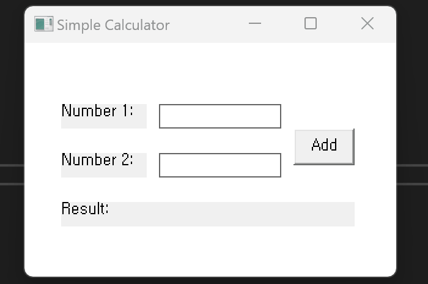

OPERATOR
연산자 종류
C언어와 C++은 연산자가 거의 동일하다. 값을 계산하고, 저장하고, 비교하고, 판단하는 6가지 연산자를 하나씩 살펴본다.
+ −산술
=할당
==비교
&&논리
++증감
&비트
ARITHMETIC
1. 산술 연산자
산술 연산자는 기본적인 수학 연산을 수행한다.
+덧셈
−뺄셈
*곱셈
/나눗셈
%나머지
int a = 10;
int b = 20;
int sum = a + b; // 30
int diff = b - a; // 10
int prod = a * b; // 200
int quotient = b / a; // 2
int remainder = b % a; // 0
그림. 산술 연산자로 만든 간단한 덧셈 계산기 프로그램
ASSIGNMENT
2. 할당 연산자 (대입 연산자)
기본 할당 연산자
int a = 10; // 변수 a를 선언하고 10으로 초기화정리하면 👉 기본 할당 연산자는 변수를 초기화하거나 값을 설정하는 데 사용된다. 변수를 선언하고 초기 값을 할당하는 것과 같은 의미이다.
복합 할당 연산자
복합 할당 연산자는 값을 변수에 저장하고, 동시에 다른 연산(덧셈, 뺄셈 등)을 수행한다.
+=더하고 할당
-=빼고 할당
*=곱하고 할당
/=나누고 할당
%=나머지 할당
a = 5➜ a += 3 ➜a = 8
a = 5➜ a -= 3 ➜a = 2
a = 5➜ a *= 3 ➜a = 15
a = 9➜ a /= 3 ➜a = 3
a = 9➜ a %= 4 ➜a = 1
COMPARISON
3. 비교 연산자
비교 연산자는 두 값을 서로 비교하여 그 결과를 판단하는 연산자이다. 일반적으로 true 또는 false라는 논리값을 반환한다.
#include <stdio.h>
#include <stdbool.h>
int main()
{
bool r1 = (5 == 5); // true — 같다
bool r2 = (5 != 3); // true — 같지 않다
bool r3 = (5 > 3); // true — 크다
bool r4 = (3 < 5); // true — 작다
bool r5 = (5 >= 5); // true — 크거나 같다
bool r6 = (3 <= 5); // true — 작거나 같다
return 0;
}==
5 == 5 → true!=
5 != 3 → true>
5 > 3 → true<
3 < 5 → true>=
5 >= 5 → true<=
3 <= 5 → trueLOGICAL
4. 논리 연산자
&&그리고
||또는
!부정
- && (그리고) — 둘 다 true여야 true를 반환한다.
true && false → false - || (또는) — 하나라도 true면 true를 반환한다.
true || false → true - ! (부정) — true면 false를, false면 true를 반환한다. 값 앞에 붙인다.
!true → false
#include <stdio.h>
#include <stdbool.h>
int main()
{
bool a = true;
bool b = false;
bool r1 = (a && b); // false
bool r2 = (a || b); // true
bool r3 = !a; // false
return 0;
}INC/DEC
5. 증감 연산자
++증가
--감소
a = 5➜ a++ ➜a = 6
a = 5➜ a-- ➜a = 4
여백 메모 ✏️ for문에서 매번 봤던
i++가 바로 이 증가 연산자이다. "i를 1씩 늘려라"는 뜻이었다.BITWISE
6. 비트 연산자
비트 연산자는 숫자를 2진수(비트) 단위로 다룬다. 평소엔 잘 안 보이지만, 게임 최적화나 플래그 처리에 종종 쓰인다.
&AND
두 비트가 둘 다 1일 때만 결과가 1이 된다.
0101 (a의 이진수)
& 0011 (b의 이진수)
----
0001 (AND 연산 결과)
#include <stdio.h>
int main()
{
int a = 5; // 0101
int b = 3; // 0011
int result = a & b; // 0001
printf("a & b의 결과: %d\n", result); // 1
return 0;
}|OR
두 비트 중 하나라도 1이면 결과가 1이 된다.
0101 (a의 이진수)
| 0011 (b의 이진수)
----
0111 (OR 연산 결과)
#include <stdio.h>
int main()
{
int a = 5; // 0101
int b = 3; // 0011
int result = a | b; // 0111
printf("a | b의 결과: %d\n", result); // 7
return 0;
}^XOR
두 비트가 서로 다르면 1, 같으면 0이 된다.
0101 (a의 이진수)
^ 0011 (b의 이진수)
----
0110 (XOR 연산 결과)
#include <stdio.h>
int main()
{
int a = 5; // 0101
int b = 3; // 0011
int result = a ^ b; // 0110
printf("a ^ b의 결과: %d\n", result); // 6
return 0;
}~NOT
단항 연산자로, 모든 비트를 반전(0↔1)시킨다.
0101 (a의 이진수)
~ ----
1010 (NOT 연산 결과)
#include <stdio.h>
int main()
{
int a = 5; // 0101
int result = ~a; // 1010
printf("a의 NOT 연산 결과: %d\n", result); // -6
return 0;
}<<왼쪽 시프트
모든 비트를 지정된 횟수만큼 왼쪽으로 이동시킨다. 오른쪽 끝엔 0이 채워진다.
0101 (a의 이진수)
<< 2
----
10100 (왼쪽 시프트 결과)
#include <stdio.h>
int main()
{
int a = 5; // 0101
int result = a << 2; // 10100
printf("a << 2의 결과: %d\n", result); // 20
return 0;
}>>오른쪽 시프트
모든 비트를 지정된 횟수만큼 오른쪽으로 이동시킨다.
10100 (a의 이진수)
>> 2
----
00101 (오른쪽 시프트 결과)
#include <stdio.h>
int main()
{
int a = 20; // 10100
int result = a >> 2; // 00101
printf("a >> 2의 결과: %d\n", result); // 5
return 0;
}